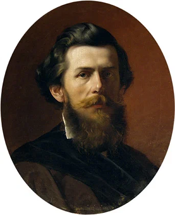
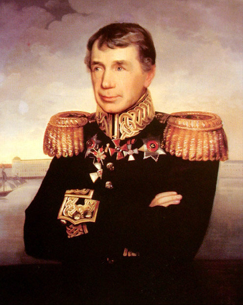

Ф.А. Бронников. Портрет А.П. Боголюбова в молодости. 1856
Саратовский государственный художественный музей им. А. Н. Радищева
Теперь служба моя при адмирале давала звание флаг-офицера, так что поход 1846 года я уже совершил на 110-пушечном корабле "Император Александр I". Проплавали обычным образом, пришли на зимовку в Ревель…
В сентябре (1847 года – g._g.) было здесь крупное событие. Это похороны нашего славного первого кругосветного мореплавателя, директора Морского корпуса адмирала Ивана Фёдоровича Крузенштерна. Умер он в своей мызе Ассе. Печальная церемония началась на Петровском форштадте и шла в Вышгородскую лютеранскую церковь, где он и погребён. Его встретили все три экипажа зимующих здесь кораблей. Войском командовал мой дивизионер А.А. Дурасов.
Кирка эта - Пантеон остзейского края, ибо там хоронятся именитые дворяне. Алая кирка с высоким шпилем в нижнем городе не такая древняя. В ней в наше время валялся высохший труп бедного герцога Де Крома в парике и камзоле времён Луи XV. Кто только не издевался над ним! Лежал он в склепе без оконных стёкол, и когда его мочил дождь, ктитор церкви ставил труп к окну дыбом просушиться. Лежал он, говорят, без дна и покрышки за долги. В силу закона лишался он погребения, пока его родня не уплатит. Теперь это пугало убрано, слава Богу, хотя законы русские ещё не введены сполна.
Такие уродства долго ещё жили в других городах Курляндии... То ли дело немцы! Взяли Эльзас и Лотарингию - и в месяц все улицы уже были написаны по-немецки, и официально язык стал тот же. Хочешь достать что-либо, так будь немцем волею или неволею. А мы, грешные, вот уже более 250 лет ходим около этого народа, надев перчатки. Грех сказать про остзейское дворянство, что они не послужили России верою и правдою. Много они дали нам славных деятелей, героев и имён почётных, а потому отчего им не выдумать нарочно почётных привилегий. Но холоп этих рыцарей - расплодившийся бюргер их обворовывал, сделался теперь силою края и хочет быть берлинцем пуще дворянства, сочувствуя Бисмарку и даже жалуясь ему на наше правительство. Вот это-то хамское уродливое племя надо было бы совсем сравнять с честным чухонцем, которого они эксплуатируют. Но у нас всегда были полумеры везде и во всём.

Иван Федорович Крузенштерн
Вот что рассказали про И.Ф. Крузенштерна. Когда Крузенштерн был волонтёром в английском флоте, какой-то юный англичанин задел сильно самолюбие русского офицера в людной сходке, почему Крузенштерн вызвал его на дуэль. "Джон Буль" ответил ему, что дуэль не в привычках джентльмена. "Ну, а как же мне смыть нанесённую обиду, ежели вы не хотите извиниться? Вы трус!" - "Требуйте что-либо другое, и я готов доказать, что нет". Крузенштерн выдумал следующее. Положено было достать две гранаты, начинённые порохом, приложить к ним станины и дать каждому из обиженных по фитилю, чтобы они их зажгли и не бежали от них, но шли медленно, считая шаги по секундомеру. Такая дуэль состоялась. Крузенштерн бодро подошёл к своей гранате, выбранной полюбовно, зажёг её, и на пятнадцатом шагу последовал взрыв совершенно благополучно. Англичанин, не дойдя до своей шагов пять, побежал обратно и был за то сильно избит боксёрами-секундантами, а Ивана Фёдоровича понесли с триумфом в таверну, где все ожидали конца поединка.